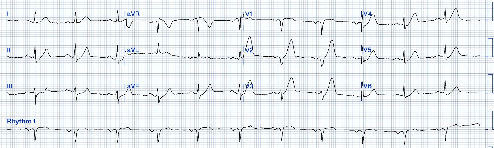
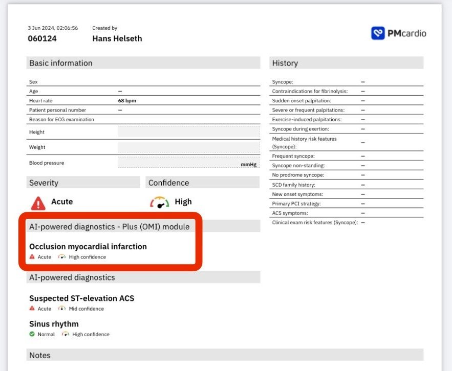
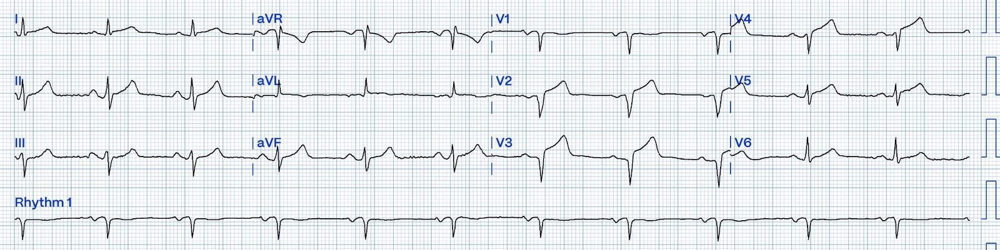
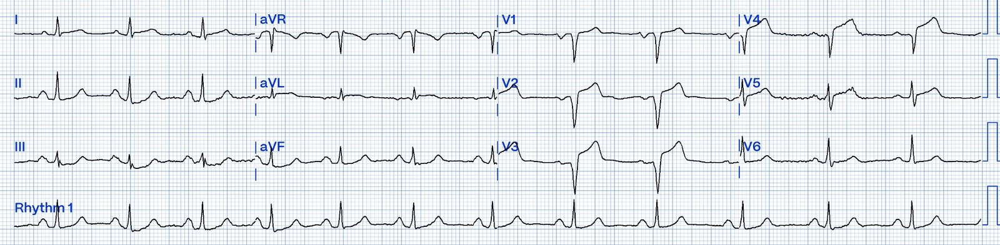
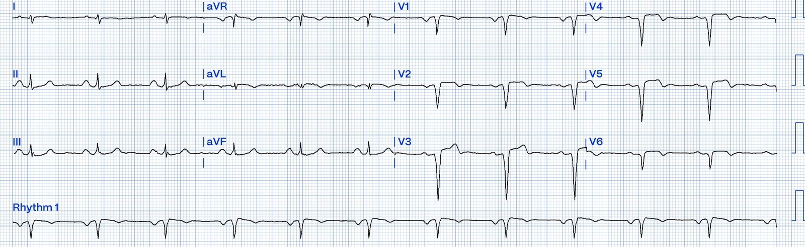
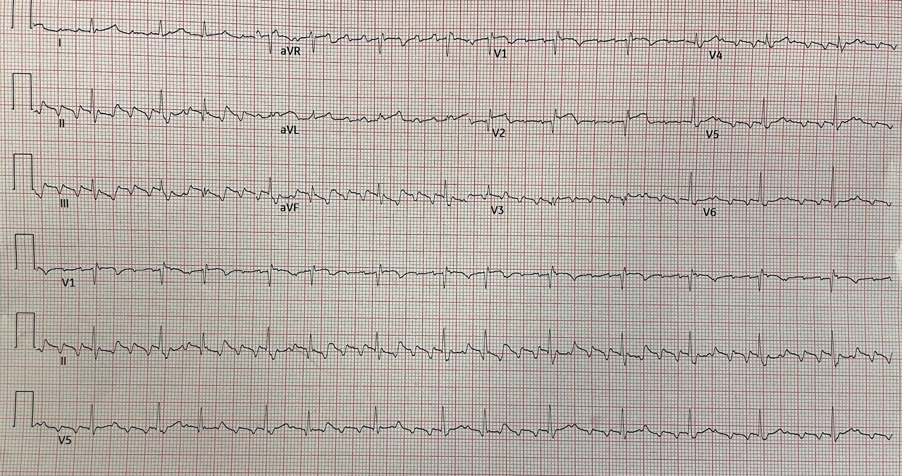
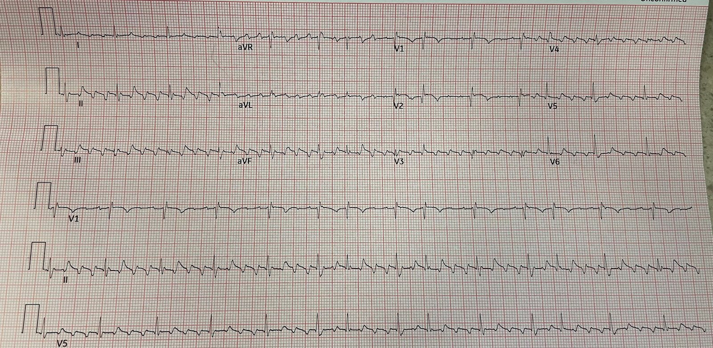
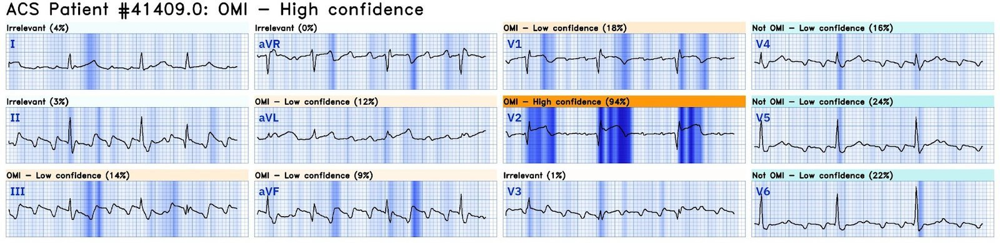
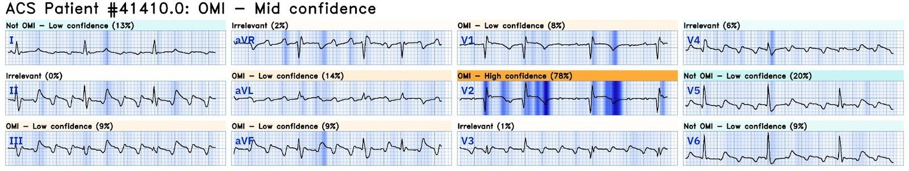
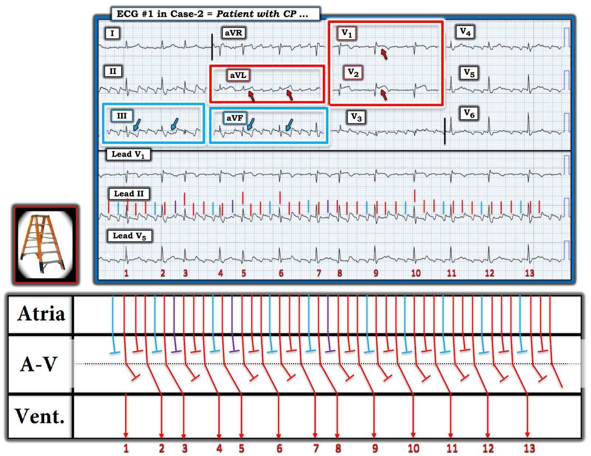

03/06/2024 — Hãy xem Queen of Hearts có thể làm được gì trong 2 ca bệnh ở vùng nông thôn này
Bản dịch tiếng Việt của bài "See What the Queen of Hearts could do in these 2 Rural Cases" – Dr. Smith’s ECG Blog. Giữ nguyên toàn bộ 11 hình ảnh của bản gốc.
You too can have the Queen of Hearts AI model (Bạn cũng có thể sở hữu mô hình AI Queen of Hearts)
Ca 1.
Ca 1 là một ca nữa do một sinh viên đại học đang làm kỹ thuật viên điện tâm đồ gửi đến và viết.
Cậu ấy đã gửi cho tôi ca rất hay này và cả ca này nữa.
Tôi (Smith) đã thêm khá nhiều bình luận.
Một
nam giới 72 tuổi có tiền sử “bệnh động mạch vành đã đặt stent” đến
một bệnh viện vùng nông thôn (không có khả năng PCI) vì đau ngực. Cơn đau bắt đầu 2
giờ trước khi nhập viện, trong lúc đang lao động chân tay. Ông
mô tả cơn đau ở sau xương ức, liên tục và không lan. Một điện tâm đồ
được ghi ngay lập tức:


Điện tâm đồ
này rõ ràng có giá trị chẩn đoán tắc LAD. Những ai quen thuộc với hình ảnh này
sẽ nhận ra ngay lập tức.
Smith: Với những ai chưa quen, sóng T ở V2-V5 (và cả V6) là sóng T tối cấp (hyperacute T-waves, HATW). Nghĩa là chúng có diện tích dưới đường cong lớn so với kích thước QRS. Chúng đồ sộ, chứ không chỉ cao.
Bốn đặc điểm tạo nên một sóng T tối cấp:
1) chiều cao,
2) độ rộng (khoảng QT trừ thời gian QRS)
3) mất tính lõm hướng lên của đoạn ST (khiến đoạn ST thẳng hơn, hoặc trong những ca thật rõ ràng thì lồi)
4) Tỷ lệ giữa độ “đồ sộ” tổng thể đó với kích thước QRS (chiều cao hoặc diện tích dưới đường cong của QRS, hoặc cả hai)
Các HATW trong ca này là một phân nhóm của tập hợp HATW lớn hơn nhiều, gọi là sóng T de Winter. Sóng T de Winter là HATW ở thành trước có đoạn khởi đầu ST chênh xuống (đứng trước là ST chênh xuống). HATW có đoạn khởi đầu ST chênh xuống như vậy cũng có thể xuất hiện ở các chuyển đạo dưới và/hoặc bên nếu đó là vùng nhồi máu, nhưng de Winter chỉ mô tả dạng liên quan đến LAD.
Điều quan trọng cần lưu ý: tăng tiến sóng R vẫn còn được bảo tồn
tốt. PCI ngay lập tức ở bệnh nhân có điện tâm đồ này
có thể cứu được rất nhiều cơ tim còn sống.
Người
thầy thuốc cấp cứu tại bệnh viện nông thôn đã không nhận ra điện tâm đồ này.
Họ ghi: “Sóng T ở V2 và V3 hơi cao. Tôi không có điện tâm đồ cũ
để so sánh”.
Queen of Hearts nhận ra hiện tượng de Winter:


Vì
điện tâm đồ không được nhận ra, bệnh nhân phải trông cậy vào troponin để
thu hút sự chú ý của người thầy thuốc. Không may, troponin I đầu tiên,
lấy lúc nhập viện, chỉ là 0,013 (giới hạn trên tham chiếu (URL) của xét nghiệm này là 0,034).
Smith: Ít nhất 25% STEMI toàn phát có troponin ban đầu âm tính. BẠN KHÔNG THỂ DÙNG TROPONIN ĐỂ LOẠI TRỪ OMI!!!
Không
có nhiều thông tin về thời gian ông nằm ở khoa cấp cứu (ED). Bệnh nhân được cho dùng
aspirin và nitroglycerin nhưng không đỡ đau nhiều. Cuối cùng bệnh nhân
được cho morphine và cơn đau giảm.
Smith: Đừng bao giờ cho morphine trong hội chứng vành cấp (ACS) trừ khi bạn đã quyết định đưa bệnh nhân vào phòng thông tim (cath lab). Nó chỉ làm chậm tái tưới máu
Có
thêm một ít thông tin về lần nhồi máu cơ tim trước của bệnh nhân. Hai mươi năm trước,
bệnh nhân được đặt stent LAD đoạn gần vì tắc 95%. Một
siêu âm tim chính thức sau lần nhồi máu đó cho thấy phân suất tống máu 50%.
Sau 4 giờ chờ ở khoa cấp cứu, troponin I lần hai trả về 0,296 ng/mL.
Kết quả này dẫn đến việc ghi lại điện tâm đồ:


OMI
đã tiến triển đáng kể trong 4 giờ bệnh nhân
chờ ở khoa cấp cứu với LAD bị tắc. Sóng R ở V3 đã
biến mất, và sóng R ở V4 rất nhỏ.
Người
thầy thuốc cấp cứu cập nhật nhận định: “Đau ngực với troponin ban đầu
âm tính và điện tâm đồ không có gì đặc biệt, nay troponin tăng và điện tâm đồ
đáng lo ngại STEMI”
Người
thầy thuốc cấp cứu đã gọi hội chẩn tim mạch khẩn (STAT) với
cơ sở có khả năng PCI gần nhất. Khoa tim mạch chấp nhận bệnh nhân để
chuyển viện, ghi rằng “Ông đến [cơ sở nông thôn], nơi điện tâm đồ đầu tiên
cho thấy sóng T nhọn nhưng không có ST chênh lên. Điện tâm đồ sau đó cho thấy ST chênh lên”.
Bệnh
nhân được chuyển đến cơ sở có khả năng PCI bằng trực thăng, nhưng phải
chờ ở khoa cấp cứu cho một ca khác trong phòng thông tim làm xong. Một điện tâm đồ
khác được ghi trong lúc ông chờ:


Giờ thì sóng R nhỏ ở V4 đã biến mất.
Đã xuất hiện ST chênh xuống soi gương ở các chuyển đạo dưới.
Smith: điện tâm đồ có sóng QS này cho thấy một nhồi máu thành trước gần như đã hoàn tất. Một lượng cơ tim khổng lồ nay đã bị nhồi máu (chết, hoại tử).
Troponin T được lấy trong lúc ông chờ. Kết quả là 504 ng/L (URL của xét nghiệm này ở nam là 16).
Cuối
cùng bệnh nhân được đưa vào phòng thông tim khoảng 7 giờ sau khi
ông đến bệnh viện nông thôn lần đầu và 9 giờ sau khi khởi phát
đau ngực. Phát hiện tái hẹp trong stent 99% ở LAD đoạn gần với dòng chảy TIMI 1
và đã được đặt stent.
Một điện tâm đồ sau thông tim được ghi:


Đây là điện tâm đồ điển hình của phình thất trái, mặc dù một túi phình giải phẫu thực sự phải mất nhiều tuần mới hình thành. Đây là một điện tâm đồ rất xấu.
Không may,
giờ đây không còn sóng R ở bất kỳ chuyển đạo trước tim nào! Hãy so sánh điều này
với điện tâm đồ lúc bệnh nhân đến cơ sở nông thôn, khi tăng tiến sóng R
còn tương đối bình thường. Cũng đáng chú ý là trục mới lệch
phải. Vectơ khử cực hướng về thất trái đã suy giảm
đủ để kéo vectơ khử cực thất trung bình về phía
thất phải.
Sau thông tim, troponin T lần nữa được lấy. Kết quả là >10.000 ng/L. Giá trị >1.000 ng/L là điển hình của OMI. Giá trị này cao hơn 10 lần. Đây là một OMI diện rộng.
Siêu âm tim chính thức làm vào ngày sau thông tim cho thấy:
- Chức năng tâm thu toàn bộ giảm nặng với EF ước tính 20-25%
- Thành trước đoạn giữa và đoạn xa, toàn bộ mỏm, và đoạn giữa vách trước bất thường - phù hợp với nhồi máu vùng LAD rộng
Người
đàn ông này đã mất 50-60% phân suất tống máu vì OMI này. Tất nhiên, một phần
EF có thể hồi phục, nhưng với troponin T trên 10.000, phần lớn
tổn thương này sẽ là vĩnh viễn.
Bệnh nhân đang được đánh giá suy tim.
Ca 2
Ca này do một người bạn thân gửi, người đã cùng tôi học nội trú cấp cứu (EM) 34 năm trước. Anh ấy làm việc tại một bệnh viện nhỏ không có khả năng PCI. Anh ấy rất rất thông minh và đọc điện tâm đồ giỏi.
Đây là một nam giới 70 tuổi không có tiền sử bệnh mạch vành, nhưng có tiền sử triệt đốt rung nhĩ 10 năm trước. Ông đến vì đau ngực và nhịp tim nhanh. Ông đang rung nhĩ với tần số thất 170. Bạn tôi không gửi điện tâm đồ đó. Bạn tôi cho bệnh nhân dùng amiodarone và tần số tim giảm.
Sau đó anh ấy ghi được điện tâm đồ này:


Nay là cuồng nhĩ với blốc thay đổi và tần số đã được kiểm soát
Điện tâm đồ này cho thấy một OMI rõ ràng ở chuyển đạo V2. Nó có giá trị chẩn đoán OMI LAD.
Chỉ có ST chênh lên (STE) ＜1 mm ở đúng 1 chuyển đạo (V2), nhưng trong RBBB lẽ ra phải KHÔNG CÓ chút STE nào.
Có thể có người nghĩ STE là do sóng cuồng nhĩ trên đường nền, nhưng phân tích kỹ cho thấy các sóng cuồng nhĩ hầu như không gây dao động đường nền nào.
Sau đó bạn tôi hỏi về điện tâm đồ này: “Tôi có nên cho thuốc tiêu sợi huyết trước khi chuyển viện không?” Câu trả lời của tôi là: “Có, đây là tắc LAD và, nếu kéo dài, sẽ dẫn đến mất cơ tim trên diện rộng.
Ca bệnh tiếp diễn:
Troponin I trả về 0,020 ng/mL (dưới URL bách phân vị thứ 99).
MỘT LẦN NỮA: đừng tin vào troponin để loại trừ OMI!!
Bạn tôi hội chẩn khoa tim mạch tại trung tâm PCI, nhưng họ không thấy có gì đáng lưu tâm trên điện tâm đồ và cố thuyết phục bạn tôi không chuyển bệnh nhân đến bệnh viện có khả năng PCI.
Bác sĩ tim mạch đã không nhận ra các dấu hiệu OMI.
Lập luận của bác sĩ tim mạch một phần dựa vào nghiệm pháp gắng sức âm tính 2 tháng trước. Một nghiệm pháp gắng sức âm tính trước đó hầu như không nói lên điều gì về xác suất ACS ở một bệnh nhân đau ngực tại khoa cấp cứu!!
___________
Có 3 nghiên cứu về vấn đề này. Một nghiên cứu là của tôi:
1. Smith SW. Jackson E. Hanson K. Bart B. Incidence of MI
in ED Chest Pain Patients with a Recent Negative Stress Imaging Test (Tỷ lệ nhồi máu cơ tim ở bệnh nhân đau ngực tại khoa cấp cứu có nghiệm pháp gắng sức hình ảnh âm tính gần đây). Tạp chí Academic Emergency Medicine 2005; 12(Suppl 5):51.
2. Một nghiên cứu khác của Rebecca Nerenberg: Impact of a negative prior stress test on emergencyphysician disposition decision in ED patients withchest pain syndromes (Tác động của nghiệm pháp gắng sức âm tính trước đó lên quyết định xử trí của bác sĩ cấp cứu ở bệnh nhân đau ngực tại khoa cấp cứu). Tạp chí AJEM, 2006.
Tất cả đều cho thấy ở những bệnh nhân đến khoa cấp cứu vì đau ngực, không có khác biệt giữa người có nghiệm pháp gắng sức hình ảnh âm tính gần đây và người không có!
__________
Bạn tôi không nhìn ra OMI, nhưng anh ấy không yên tâm giữ bệnh nhân lại.
Anh ấy đã sắp xếp chuyển viện.
Trong lúc chờ chuyển viện, bệnh nhân hết đau. Một điện tâm đồ khác được ghi:


Vẫn là cuồng nhĩ với blốc thay đổi, tần số khoảng 75.
Giờ STE ở V2 đã giảm nhiều và sóng T đảo ngược. LAD đã tái tưới máu (bệnh nhân may mắn!!). Hãy nhớ rằng 33% STEMI tái tưới máu TRƯỚC khi đến phòng thông tim. Hiện tượng này được gọi là tái tưới máu tự phát hay tái thông. Nó cũng được gọi là STEMI thoáng qua hay OMI thoáng qua. Hội chứng Wellens là hội chứng tái tưới máu LAD (OMI thoáng qua), trong đó OMI không được ghi lại trong lúc tắc mà chỉ được ghi sau khi đã tái tưới máu.
Chụp mạch vành 2 ngày sau cho thấy tổn thương thủ phạm ở LAD đoạn gần hẹp 95%, đã được đặt stent. Điều này tất nhiên phù hợp với một OMI LAD đã tái tưới máu.
Đây là kết quả đọc của Queen of Hearts cho cả hai điện tâm đồ, kèm khả năng giải thích (explainability):
Điện tâm đồ đầu tiên, lúc tắc hoàn toàn:


OMI với độ tin cậy cao
Điện tâm đồ thứ 2 sau khi hết đau ngực, lúc đã tái tưới máu:


OMI với độ tin cậy trung bình
Phiên bản 1 của Queen không phân biệt OMI đang diễn ra với OMI đã tái tưới máu.
You too can have the Queen of Hearts AI model (Bạn cũng có thể sở hữu mô hình AI Queen of Hearts)
Bạn tôi hỏi vì sao các bác sĩ tim mạch lại hay bỏ sót những OMI NSTEMI (NSTEMI-OMI) này đến vậy.
Tôi chỉ có thể suy đoán:
1) chuyên khoa của họ cực kỳ rộng và có quá nhiều thứ phải biết
2) họ tin rằng điện tâm đồ không đặc hiệu. Nếu họ không thấy OMI trên điện tâm đồ ngay cả khi nó có mặt, điều đó càng củng cố định kiến. (Thực ra chính người đọc, chứ không phải điện tâm đồ, mới là thứ không đặc hiệu)
3) đọc OMI trên điện tâm đồ khó đến khó tin, đòi hỏi nhiều năm học tập miệt mài với các ca đã biết kết cục,
4) người ta cần hiểu việc này khó đến mức nào và rằng có lẽ mình chưa biết làm việc đó thật tốt. Nghĩa là phải bắt đầu với sự khiêm tốn tuyệt đối.
5) Bác sĩ tim mạch không khám những bệnh nhân đau ngực chưa phân định.
6) Văn hóa ở đây dường như coi trọng tránh dương tính giả hơn tránh âm tính giả.
7) một niềm tin thực sự (bất chấp bằng chứng ngược lại) rằng bất kỳ bệnh nhân nào cần can thiệp mạch vành cấp cứu đều phải có điện tâm đồ đáp ứng tiêu chuẩn STEMI.
8) Khái niệm OMI còn mới.

===================================
BÌNH LUẬN CỦA TÔI, bởi KEN GRAUER, MD (3/6/2024):
===================================
Bài hôm nay nêu bật 2 ca OMI đã bị bỏ sót. Tôi thấy Ca #1 đặc biệt đáng bực mình — vì điện tâm đồ ban đầu là một minh họa kinh điển của sóng T de Winter (deWinter T waves), với những sóng T đúng nghĩa khổng lồ, cao hơn gấp đôi chiều cao sóng R ở các chuyển đạo V2 và V3. Đây là một hình ảnh mà người làm cấp cứu không được phép bỏ sót (để ôn lại — Xin xem Bình luận của tôi ở cuối trang trong bài ngày 17 tháng Tư năm 2023 của Dr. Smith’s ECG Blog).
Ca #2 trong bài hôm nay tinh tế hơn — và chính ca thứ 2 này (đặc biệt là một số chi tiết tinh tế về nhịp tim) là trọng tâm bình luận của tôi.
- Để rõ ràng, trong Hình 1 — tôi đã ghi chú điện tâm đồ ban đầu và thêm một giản đồ bậc thang (laddergram) để minh họa cơ chế của nhịp


Suy nghĩ của tôi về Ca #2:
Như BS. Smith đã nêu — điện tâm đồ ban đầu của Ca #2 cho thấy dù nhịp nền là cuồng nhĩ (AFlutter) — ST chênh lên ở chuyển đạo V2 khi có RBBB là đủ để chẩn đoán OMI LAD.
- Lý do chẩn đoán OMI LAD cấp khó khăn ở Ca #2 — là các sóng cuồng nhĩ chồng lên trên đoạn ST-T bên dưới. Dù vậy — các mũi tên ĐỎ ở chuyển đạo V1 và V2 trong Hình 1 cho thấy rõ ST dạng vòm (coving) và chênh lên (điều không được phép có khi có RBBB — vốn bình thường cho thấy ST chênh xuống ở các chuyển đạo này). Soi kỹ đường nền điện tâm đồ ở các chuyển đạo này (trong hình chữ nhật ĐỎ) cho thấy sự khác biệt rõ so với đường nền ở xa đoạn ST.
- Tinh tế hơn, nhưng vẫn chắc chắn có mặt — là ST chênh lên cả ở chuyển đạo aVL (các mũi tên ĐỎ ở chuyển đạo này) — ST chênh lên tinh tế ở aVL này thấy rõ nhất khi so với đường nền điện tâm đồ ở xa phức bộ QRS trong chuyển đạo aVL.
- Các mũi tên XANH LAM ở chuyển đạo III và chuyển đạo aVF — cho thấy ST chênh xuống soi gương (một lần nữa, thấy rõ nhất khi so “chỗ trũng” của đoạn ST được các mũi tên XANH LAM đánh dấu ở các chuyển đạo này với đường nền điện tâm đồ ở xa các phức bộ QRS) tinh tế-nhưng-chắc-chắn có mặt.
- ĐIỀU CỐT LÕI: Sự kết hợp giữa ST dạng vòm bất thường và chênh lên ở các chuyển đạo V1,V2 và aVL — kèm ST chênh xuống soi gương ở các chuyển đạo dưới III và aVF — ở bệnh nhân này có đau ngực mới xuất hiện — là hoàn toàn đủ để chẩn đoán OMI LAD đoạn gần.
Còn nhịp thì sao?
Như BS. Smith đã nêu — nhịp nền ở Ca #2 là cuồng nhĩ (AFlutter). Tôi xin nhấn mạnh rằng chỉ cần nhận ra dẫn truyền thay đổi của nhịp này là đủ để xử trí phù hợp ca bệnh. Dù vậy — Vượt ra ngoài phần cốt lõi dành cho bạn đọc thích thử thách với các rối loạn nhịp phức tạp — là nhận ra rằng nhịp trong Hình 1 có một quy luật.
- Dù không phải mọi khoảng R-R trong Hình 1 đều bằng nhau — chỉ có 2 độ dài khoảng R-R khác nhau — và 2 độ dài khoảng R-R này lặp lại! Khoảng R-R ngắn hơn ngăn cách các nhát #2-3; 4-5; và 7-8. Khoảng R-R dài hơn ngăn cách các nhát #1-2; 3-4; 5-6; 6-7; 8-9; 9-10; 10-11; 11-12; và 12-13.
- Điểm MẤU CHỐT: Như tôi đã minh họa trong nhiều bài Blog trước — cuồng nhĩ thường biểu hiện dẫn truyền Wenckebach. Về mặt kỹ thuật — đây không phải là một “blốc” dẫn truyền, mà đúng hơn là sự giảm dẫn truyền có thể dự đoán của một nút AV phải tiếp nhận các xung cuồng nhĩ cực nhanh, quá nhanh để dẫn truyền hết tất cả! (~300/phút trong ca hôm nay!).
- Không chỉ có 2 họ khoảng R-R giống nhau — khoảng PR đứng trước mỗi phức bộ QRS trong nhóm khoảng R-R dài hơn đều như nhau! (tức là, khoảng PR bắt đầu từ mỗi đường XANH LAM).
- Tương tự — khoảng PR đứng trước mỗi phức bộ QRS trong nhóm khoảng R-R ngắn hơn cũng đều như nhau! (tức là, khoảng PR bắt đầu từ mỗi đường TÍM).
- ĐIỂM THEN CHỐT (PEARL): Tôi mất chưa đến 5 giây để nhận ra mối liên hệ lặp lại này giữa 2 họ khoảng R-R — cùng với phát hiện 2 khoảng PR giống nhau đứng trước cả các khoảng R-R ngắn hơn lẫn dài hơn. Điều này không phải ngẫu nhiên — và với cuồng nhĩ, gần như đủ để chẩn đoán dẫn truyền Wenckebach AV hai tầng ở một bệnh nhân cuồng nhĩ! (Xem Bình luận của tôi và giản đồ bậc thang trong bài ngày 24 tháng Mười Một năm 2020 và bài ngày 26 tháng Năm năm 2023, về khái niệm dẫn truyền Wenckebach hai tầng trong nút AV).
- Tôi đã vẽ một giản đồ bậc thang trong Hình 1 để minh họa cơ chế tôi đề xuất cho nhịp này. Cần nhớ rằng do dẫn truyền “ẩn” (tức là, các xung nhĩ dồn dập bắn phá nút AV) — thường không phải sóng cuồng nhĩ gần QRS nhất là sóng được dẫn truyền. Như vậy, có dẫn truyền Wenckebach hai tầng ra khỏi nút AV — với dẫn truyền 2:1 ở tầng nút AV trên — và dẫn truyền 3:2 luân phiên với 2:1 ở tầng nút AV dưới.
- XIN NHẤN MẠNH — Không cần sa đà vào cơ chế phức tạp của nhịp trong Ca thứ 2 này. Điều tôi thực sự muốn nhấn mạnh — là nhận ra rằng cuồng nhĩ (cũng như nhịp nhanh nhĩ (ATach)) thường biểu hiện dẫn truyền Wenckebach ở 1 tầng trở lên ra khỏi nút AV — và chỉ cần nhận ra rằng nhịp có một quy luật (như tôi minh họa ở trên) — bạn có thể trong vòng vài giây xác định dẫn truyền Wenckebach là một hệ quả có thể dự đoán của các nhịp này.
- Cuối cùng, xin nhấn mạnh — Dẫn truyền Wenckebach ra khỏi nút AV này tự nó không phải là một “blốc” AV — và rất có khả năng dẫn truyền AV bình thường sẽ trở lại khi nhịp xoang được phục hồi!